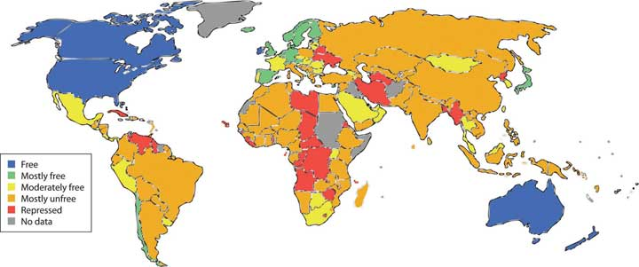

Once you have developed your investment policy statement and have determined your goals, risk tolerance, and constraints, it is time to choose a strategy and to act. Whether you entrust a professional advisor or you do it yourself—or both—depends on your confidence, knowledge, and the time and effort that you want to devote to your decisions. As is true of any personal finance decision, the ultimate responsibility for and consequences of your decisions are yours alone. Whatever you decide, the more you know about the practice of investment, the better an investor you will be.
There are four broad areas to take into account: (1) how to find and evaluate the information you need, (2) the agents and fees involved in securities trading, (3) the ethical standards and regulatory requirements of the securities industry, and (4) the special considerations of investing internationally.
Investment information seems to be everywhere: in print, radio, television, and Internet—24/7 and global. Successful investors are hailed as gurus and high-profile financial news reporters become celebrities. No shortage of commentators and pundits will analyze every morsel of news, but how can you find useful investment information to make investment decisions? Even more important, how can you find useful information that you can trust based on the reliability of its source?
Your investment decisions involve asset allocation and security selection. To make those decisions, you need information that will help you form an idea of the economy, industry, and company that affect your decisions. The three main kinds of information that investors use are economic indicators, market indexes, and company performance.
To gauge the economic environment or cycle, the most widely used measures are the following:
The U.S. government tracks GDP, inflation, and unemployment through its agencies, such as the Federal Reserve Bank, the Bureau of Labor Statistics, and the National Bureau of Economic Research. Globally, the World Bank tracks similar statistics, which are widely reported in the media as recognized benchmarksA standard, often an index of securities, representing an industry or asset class and used as an indicator of growth potential or as a basis of comparison for similar of disparate industries or assets. of a nation’s economic health.
In addition, interest rates are another financial market indicator. Interest rates are tracked intently because so much capital investment, consumer investment (for houses, cars, education), and even daily consumption relies on debt financing. The prime rate, the lowest available retail interest rate, and average mortgage rates are the most commonly followed rates.
Economists look at many other factors to measure the economy. The index of leading economic indicatorsA set of ten economic statistics that are used to assess the potential for economic growth., published monthly, includes the following:
All these measures indicate how productive the economy is, how successful it is at creating jobs and incomes, and how much benefit it can create for consumers. A decline in the leading indicators for three consecutive months is thought to be a strong sign that the economy is in a downturn or even heading toward a recession.
The health of financial markets is gauged by the values of various securities indexes that show the growth or decline of prices in various markets. The indexes are used to gauge the movement, direction, and rate of change as well as nominal value.
Figure 14.2 "Examples of Security Indexes" lists some examples of the many stock indexes and bond indexes and the publicly traded securities they track.
Figure 14.2 Examples of Security Indexes
There is an index for anything that is traded: commodities, currencies, interest rate futures, and so on. Measures of market momentum include statistics such as the percentage of stocks that advanced (increased in value) or declined (decreased in value) or the volume of shares bought and sold. If more stocks advanced than declined, for example, that may suggest optimism for the stock market.
When interpreting index information, be aware of the investments an index represents. For example, the Dow Jones Industrial Average, or “the Dow,” consists of the equity values of only thirty companies of the more than five thousand publicly traded companies. The Dow is quoted widely and regularly. It was started in 1896 by Charles Dow, founder of Dow Jones, Inc., and the Wall Street Journal.
Figure 14.3 The Dow Jones Home Page
Some companies specialize in analyzing asset classes of particular securities. Two well-known analysts of mutual fund performance are Morningstar (http://www.morningstar.com), which is geared toward investors, and Lipper Reports (http://www.lipper.com), which is geared toward investment managers.
Indexes are used as benchmarks for an asset class or a sector of the economy. The Standard & Poor’s (S&P) 500 Index is used to benchmark the performance of large company (large cap) stocks, for example, while the Dow Jones Transportation Index is used to compare the performance of the transportation industry to that of other industries.
An industry’s media is another place to research how an industry is doing. Most industries have online trade journals and magazines that can give you an idea of industry activity, optimism, and overall health. Another source are companies that specialize in research and analysis of industry and company data, such as Hoover’s (http://www.hoovers.com) or Value Line (http://www.valueline.com).
When professionals analyze a company for its investment potential, they look first at financial statements. You can access this data as well, because all publicly traded corporations must file both annual and quarterly financial reports with the U.S. Securities and Exchange Commission (SEC). Those files are then made available on the SEC’s Web site (http://www.sec.gov/edgar) through Electronic Data Gathering and Retrieval (EDGAR), the SEC’s data bank. The annual reports (10-Ks) are audited, and the quarterly reports (10-Qs) are unaudited, but both have to show the company’s financial statements and report on important developments and plans or explain unusual financial results.
The 10-K and the 10-Q can give you a good sense of what and how the company has been doing or planning for the future. Similar corporate information may be found in the company’s annual report, sent to shareholders and also available on the company’s Web site.
An annual report is a narrative of how the company is doing. It includes financial statements, dated at least two years back so that you can see the company’s progress. It also includes a discussion, presented by the company’s management, of the company’s strategic plans, competitive environment, industry outlook, particular risk exposures, and so on. You can get a good sense of how well positioned the company is going forward from an annual report or 10-K.
Investment information is readily available. Accessing that information is easy, but evaluating its reliability may be difficult, along with knowing how to use it. It is important to distinguish between objective news and subjective commentary. A reporter should be providing unbiased information, while a commentator is providing a subjective analysis of it. A news article ideally conveys objective facts, while an editorial or opinion provides subjective commentary. Both kinds of “news” appear in all kinds of media, such as print, radio, television, and the Internet. Most print publications have continually updated Web sites, some with streaming video, and there are financial social networks and blogs providing online discussion and observation.
As you explore the sources of financial news, you will develop a sense of which ones are the most useful to you. Figure 14.4 "Sample of Financial News Sources" lists a selection of financial news sites to explore.
Figure 14.4 Sample of Financial News Sources

As you survey these news sources, be aware of features that might lead you to trust an online source of information. The following are some questions to help you evaluate the credibility of a Web site:Dax R. Norman, “Web Sites You Can Trust,” American Libraries (August 2006): 36. Also see the Librarians’ Internet Index of Web Sites You Can Trust, http://lii.org/ (accessed June 2, 2009).
The more questions you can answer in the affirmative, the higher the credibility of the Web site and the more you can trust it as a source of information. The same questions can be extended to evaluate the reliability of specific online financial news sources.
The discussion of investment so far has focused on the ideas behind your investment plan, but to be useful to you, your plan has to be implemented. You have to invest, and then, over time, trade. How do you access the capital markets? How and when do you buy, sell, or hold?
To answer these questions you need to know the types of agents who exercise trades in the financial markets; the types of services, accounts, and fees they offer; and the kinds of trading orders they execute on your behalf.
The markets or exchanges for stocks, bonds, commodities, or funds are membership organizations. Unless you are a member of the exchange, you cannot trade on the exchange without hiring an agent to execute trades for you. Trading essentially is buying and selling.
As you’ve read in Chapter 12 "Investing", a brokerAn intermediary that acts as an agent for buyers or sellers to arrange a trade. is an agent who trades on behalf of clients to fulfill client directives. A dealerA professional investor trading for its own account. is a firm that is trading for its own account. Many firms act as broker-dealersAn intermediary that acts as an agent for buyers or sellers and also trades for its own account., trading on behalf of both clients and the firm’s account. Many brokers, dealers, and broker-dealers are independent firms, but many are subsidiaries or operations of large investment banks, commercial banks, or investment companies.
Firms may offer different levels of brokerage services:
Almost all brokerages provide online and mobile access, and most allow you to access your account information, including trading history, and to place orders and receive order confirmations online. Some discount brokers operate only online, that is, they have no retail or storefront offices at all. This allows them to lower costs and fees. Most brokerages still send out hard copies of such information as well. Some also provide research reports and tools such as calculators and data for making asset allocation decisions.
As firms offer different levels of service, their compensation or fee structures may vary. A broker is compensated for executing a trade by receiving a commission based on the volume of the security traded and its price. A discount broker may offer lower commissions on trades but may provide execution-only services.
A firm may offer all levels of service or specialize in just one. Large discount brokers such as Fidelity, Scottrade, or Charles Schwab may provide a full range of services along with execution-only services that charge lower commissions on trades. Other discount brokers and online-only brokers may charge a lower flat fee per trade, rather than a commission on the amount of the trade. Some firms charge a commission on trades and a fee for advisory or discretionary services. The fee is usually a percentage of the value of the portfolio. Some charge a flat fee for a quarterly or annual portfolio check-up and advisory services.
Both the commission-based and the fee-based compensation structures have critics. The commission-based structure results in more compensation for the broker (and more cost for you) if there are a greater number of trades. This can lead some brokers to engage in excessive trading, called churningA broker practice of executing trades for a client’s account solely to create commissions for the broker.—an unwarranted and unnecessary amount of trading in your account for which the broker is being compensated.
On the other hand, a fee structure based on a percentage of the value of the assets under management can reward a broker for doing nothing. If the economy expands and asset values rise, the value of the portfolio—and therefore the broker’s compensation—may rise without any effort on the broker’s part.
The most economical recourse for an investor is to find a broker who charges a flat fee for advisory services, independent of portfolio size, and discount fees for commissions on trading. The costs of investing and trading depend on how much trading you do and how involved you are in the investment decisions. The more of the research and advisory work you do for yourself, the less your costs should be.
Two basic types of brokerage accounts are cash accounts or margin accounts. With a cash accountA brokerage account where investments are paid for from money on deposit., you can trade using only the cash you deposit into the account directly or as a result of previous trades, dividends, or interest payments. The cash account is the most common kind of brokerage account.
With a margin accountA brokerage account allowing the investor to purchase securities with funds borrowed from the broker., you may trade in amounts exceeding the cash available in the account, in effect borrowing from your broker to complete the financing of the trade. The investor is said to be “trading on margin.” The broker usually requires a minimum value for a margin account and extends credit based on the value of the cash and securities in the portfolio. If your portfolio value drops below the minimum-value threshold, perhaps because securities values have dropped, then you may be faced with a margin callThe requirement that an investor invest more capital to maintain the margin requirement, or the investor’s equity in the investment.. The broker calls on you to deposit more into the account.
Investors pay interest on funds borrowed on margin. As regulated by the Federal Reserve, the amount of an investment financed by debt or bought on margin is limited. The margin requirementThe percentage of security value that must represent capital from the investor (as opposed to money borrowed from the broker). is the percentage of the investment’s value that must be paid for in cash.
Custodial accountsA brokerage account for a minor, established with a guardian (adult) who is authorized to make trading decisions. are accounts created for minors under the federal Uniform Gifts to Minors Act (UGMA) of 1956 or the Uniform Transfers to Minors Act (UTMA) of 1986. The account is legally owned by the minor and is in his or her name, but an adult custodian must be named for the account. Otherwise, the owner of a brokerage account must be a legal adult. The account is created at a bank, brokerage firm, or mutual fund company and is managed by an adult for an underage child (as defined by the state).
Establishing a brokerage account is as easy as opening a bank account or credit card account. You will need a good credit rating, especially for a margin account, a reasonable source of income, and a minimum deposit of assets. Many brokers allow you to transfer assets from another brokerage account with minimal effort.
You need not be an expert in the arcane language brokers use to describe trades, so long as you understand the basic types of orders you can request. Say you want to buy a hundred shares of X Corporation’s common stock. You call your broker and ask the price. The broker says that at this moment, the market is “50 bid-50.25 ask.” Stock exchanges are auction markets; that is, buyers bid what they are willing to pay and sellers ask what they’re willing to accept. If the market is “50 bid-50.25 ask,” this means that right now the consensus among buyers is that they are willing to pay $50 per share, while sellers are willing to accept $50.25. The “bid-ask spread” or difference is 25 cents.
If you then place a market orderAn order to trade at the market price. to buy a hundred shares, the order will be executed at the lowest asking price—the least that the seller is willing to accept. In other words, you will pay $50.25 per share, the asking price, to buy the stock.
You could also place a limit orderA trading order to buy or sell a security at a specific price. to buy the shares when the price is lower, say $45 per share (or to sell when the price is higher, say $55), specifying how long the order is in effect. If the price goes down to $45 (or up to $55) within the period of time, then your limit order will be filled, and otherwise it will not.
When you buy a security, you are said to have a long positionOwnership of securities; used in the strategy of “going long,” which involves buying a security so that if the price rises, its sale will create a gain. in that security; you own it. You could close out your position by selling it. When you “go long” in a security, you are expecting its value to rise, so that you can buy it for a lower price and then sell it for a higher price.
Alternatively, you could create a short positionOwing securities because of having borrowed them from a broker; used in the strategy of “shorting,” which involves borrowing and selling a security so that if the price falls, you can create a gain when the securities are repurchased to be returned. in the security by borrowing it from your broker, selling it, and then buying it back and returning it to your broker at some specified point in the future. When you “short” a security, you are expecting its value to decrease, so that you can sell it at a high price and then buy it back at a lower price.
Other specialized kinds of orders include a stop-loss orderAn order to sell a security once its price has fallen below a specified price., where you direct that the stock be sold when it reaches a certain price (below the current price) in order to limit your potential loss if the value decreases. You can use a stop-buy orderAn order to buy a security once its price has risen above a specified price. to buy a stock at a certain price (above the current price) if you have “shorted” a security and want to limit your loss if its value rises.
If you are following a “buy-and-hold” strategy, you are establishing positions that you plan to hold for a long time. With this strategy you probably will do well to use a market order. Over the long term that you hold your position, the daily fluctuations in price won’t matter.
Firms may offer several levels of brokerage services, defining their roles as active manager, advisor, and/or traders:
Brokerage fees are based on the level of service provided and may consist of
Brokerage accounts may be
Trading orders allow you to better execute a specific trading strategy:
At the following Web sites, survey the argots, or “secret” vocabularies, that brokers use to discuss trades. From each glossary select five words relevant to you and their definitions to record in your personal finance journal or My Notes.
Financial markets, perhaps more than most, seem to seduce otherwise good citizens into unethical or even illegal behavior. There are several reasons:
To counteract these realities there are three forces at work: market forces, professional standards, and legal restrictions. But before these topics are discussed, it is useful to review the differences between ethical and unethical, or professional and unprofessional, behaviors in this context.
Investment intermediaries or agents such as advisors, brokers, and dealers have responsibilities to their clients, their employers, and to the markets. In carrying out these responsibilities, they should demonstrate appropriate professional conduct. Professional conduct is ethical, that is, it is based on moral principles of right and wrong as expressed in the profession’s standards of conduct.
Brokers and advisors should always deal objectively and fairly with clients, putting clients’ interests before their own. In other words, a broker should always give higher priority to the client’s wealth than to his or her own. When acting on a client’s behalf, a broker should always be aware of the trust that has been placed on him or her and act with prudenceActing with sound and responsible judgment; in investing, prudence implies a relative conservatism regarding risk. and care. The principle of due diligenceCompetent and adequate research into an investment proposal to be able to project its returns and its potential risks. stipulates, for example, that investment advisors and brokers must investigate and report to the investor every detail of a potential investment.
Kim receives an order from a client to sell shares because the client believes the stock price will drop. Kim believes the client is right and so decides to sell her own personal shares in that stock as well. She places the order to sell her shares first, so that if the price drops as she sells, her shares will be sold at a higher price. She places the order to sell the client’s shares after the price has dropped. This practice of taking advantage of the client by not putting the client first is called front-runningAn agent trading for its own account before executing trading orders for its clients.. According to professional ethics, Kim should be putting her client’s interest—and order—ahead of her own.
Professional ethics call for brokers and advisors to disclose any potential conflicts of interest they may have. They also should be diligent and thorough when researching investments and making recommendations and should have an objective basis for their advice. Investment recommendations should be suitable for the client, and advice should be given with the best interests of the client in mind.
Shonte is a financial advisor for a large broker-dealer that has acquired a large position in a certain bond issue. It now owns a lot of bonds. Wanting to reduce the company’s exposure to risk from that position, Shonte’s boss suggests that whenever possible, she should advise her clients to add this bond to their portfolios. That way the company can use its clients to buy its bonds and reduce its position. This conduct is unethical, however. Shonte should not automatically recommend the bond to all her clients, because her advice should be based solely on the individual clients’ interests and needs, not the company’s.
An advisor or broker should
In addition to being loyal to clients, brokers and advisors are expected to be loyal to employers, the professions, and the financial markets. Accepting side deals, gifts, or “kickbacks,” for example, may damage a company’s reputation, harm colleagues as well as clients, and betray the profession. Loyalty to market integrity is shown by keeping the markets competitive and fair. For example, brokers should use only information available to all. Information from private sources to which others do not have access is inside informationInformation that is not publicly available that has a material effect on an investment’s value., and making trades on the basis of inside information is called insider tradingThe illegal practice of trading securities based on nonpublic or “inside” information..
For example, Jorge, a broker, just found out from a client that the company she works for is about to be granted a patent for a new product. The information has not yet been announced publicly, but it will almost certainly increase the value of the company’s stock. Jorge is tempted to buy the stock immediately, before the news breaks, both for his employer’s account and his own. He would almost surely profit and gain points with his boss as well. But that would be wrong. Trading on inside information would be disloyal to the integrity of the markets, and it is illegal.
Brokers and advisors should not manipulate markets or try to influence or distort prices to mislead market participants. Attempts to do so have become more widespread with the tremendous growth of electronic communications. For example, Tom, a dealer, has just shorted a large position in a tech stock. On his widely read blog, he announces that his “research” has revealed serious weaknesses in the tech company’s marketing strategy and rumors of competitors’ greater advantages in the market. Tom has no factual basis for his reporting, but if his “news” causes the price of the tech stock to fall, he will profit from his short position. Tom’s attempts to manipulate the market are unethical and unprofessional.
It is often said that the financial markets are self-regulating and self-policing. Market forces may be effective in correcting or preventing unprofessional conduct, but they often don’t, so there are also professional and legal sanctions.
Sanctions provide deterrence and punishment. Registered brokers and advisors, and their firms, typically are members of professional organizations with regulatory powers. For example, professional organizations have qualifications for membership and may award credentials or accreditation that their members would not want to lose.
There are many professional designations and accreditations in the investment advising and brokerage fields (Chapter 1 "Personal Financial Planning"). However, keep in mind that no professional affiliation or designation is required to give investment advice.
The U.S. securities industry is formally regulated by federal and state governments. Government sanctions and limits have been imposed gradually, usually after a major market failure or scandal, and so form a collection of rules and laws overseen by a variety of agencies.
The Securities and Exchange Commission (SEC) is a federal government agency empowered to oversee the trading of securities and the exchanges in the capital markets. It was created in 1934 in response to the behavior that precipitated the stock market crash in 1929 and the subsequent failure of the banking system. The SEC investigates illegal activities such as trading on insider information, front-running, fraud, and market manipulation.
The SEC also requires information disclosures to inform the public about companies’ financial performance and business strategy. Investors must report to the SEC their intention to acquire more than 5 percent of a company’s shares, and business executives must report to the SEC when they buy or sell shares in their own company. The SEC then tries to minimize the use of insider information by making it publicly available.
The SEC delegates authority to self-regulatory organizations (SROs)A nongovernmental organization that regulates a profession or industry., such as the National Association of Securities Dealers (NASD), and the national stock exchanges, such as the New York Stock Exchange (NYSE). NASD and the exchanges uphold industry standards and compliance requirements for trading securities and operating brokerages.
In 2007, the SEC created a new SRO that reincorporated the NASD, renamed as the Financial Industry Regulatory Authority (FINRA). FINRA’s job is to focus exclusively on the enforcement of rules governing the securities industry. In addition, Congress created the Municipal Securities Rulemaking Board (MSRB) as an SRO. The MSRB’s job is to create rules to protect investors involved with broker-dealers and banks that trade in tax-exempt bonds and 529 college savings plans.
Figure 14.6 "Regulatory Environment of the U.S. Securities Industry" shows the structure of the securities industry’s regulatory environment.
Figure 14.6 Regulatory Environment of the U.S. Securities Industry

The Federal Reserve regulates banks and the banking system. When investment brokering and advising are services of investment or commercial banks, their actions may fall under the control of both the SEC and the Fed, as well as state banking and insurance regulators. States license investment agents. Also, each state’s attorney general is responsible for investigating securities violations in that state.
Government regulation of capital markets has long been a contentious issue in the United States. During periods of expansion and rising asset prices, there is less call for regulation and enforcement. Clients and investment agents may have fewer complaints because of investment gains and increasing earnings. When a bubble bursts or there is a true financial crisis, however, then investors demand protections and enforcement.
For example, after the stock market crash in 1929 and the widespread bank failures of 1930–1933, the Glass-Steagall Act was passed in 1933 to establish the Federal Deposit Insurance Corporation (FDIC) and take measures to reduce market speculation. A second Glass-Steagall Act, which was passed the same year and officially named the Banking Act of 1933, separated investment and commercial banking to reduce potential conflicts of interest when a bank is issuing securities for a firm that it is also lending to. In 1999, however, after years of economic expansion and at the height of the tech stock bubble, the Gramm-Leach-Bliley Act effectively repealed the Banking Act of 1933, opening the way for the consolidation of the banking industry. This consolidation led to the introduction of “one-stop-shopping” banks, which provide investment, commercial, and retail banking services all under one roof.
The financial and banking crisis that began in 2007 led to calls for increased regulation and a larger role for the federal and state governments in regulating the banking and securities industries. While history shows that the kinds of regulation and amount of government oversight vary, there clearly will always be a role for federal and state government regulators.
As an investor, you have recourse if a broker or advisor has been unethical, unprofessional, or criminal in his or her conduct. If the offending agent is working for a brokerage firm or bank, a complaint to a superior is sometimes all that is needed. The firm would prefer not to risk its reputation for one “bad apple.”
If you are not satisfied, however, you can lodge a formal complaint with a professional organization such as the relevant SRO. The SROs have standard procedures in place and will investigate your complaint. If necessary, the offender will be punished by a suspension or permanent removal of his or her professional designation or certification.
You can also complain to the SEC or a state or federal consumer protection agency, file suit in civil court, or press for a criminal complaint. Due to their complexities, investment cases are often somewhat difficult to prove, so you should consult with an attorney who is experienced with such cases. Often when a broker or advisor has used illegal practices, she or he has done so with more than one client. When you are not the only victim, the state or federal prosecutor or your lawyer may choose to bring a class action suit on behalf of all the client-victims.
As always, the best defense is to take care in choosing an investment advisor or broker. Most investment agents are chosen by word of mouth, recommendations from trusted family members, friends, or colleagues who have been satisfied clients. Before you choose, check with the professional organization with which he or she claims affiliation or certification and review any records of past complaints or offenses. You can also check with government agencies such as your state’s attorney general’s office.
Your choice of advisor or broker depends largely on your expected use of services, as suggested in Figure 14.7 "Choosing an Investment Advisor or Broker".
Figure 14.7 Choosing an Investment Advisor or Broker
You will be investing over a lifetime. The economic, market, and personal circumstances will change, and your plans and strategies will change, but your advisors and brokers should be able to help you learn from experience and prosper from—or despite—those changes.
Investing behavior may be unethical because
Investment agents have responsibilities to
To fulfill those responsibilities, brokers should always put the interests of clients, employers, professions, and markets before their own and so should not practice
Regulation of investment agents comes from
Investing is global. While the financial markets and the capital markets may resemble a global village, it is also true that investing in assets governed by foreign standards and regulations creates additional concerns.
Investments in foreign securities are used to diversify an investment portfolio’s economic risk. The United States, most nations in Europe, and Japan have highly developed economies. Other economies may be developing, such as India and China, or may be emerging, such as Nigeria and Bolivia, and may be using different strategies to achieve different rates of growth. The world economy is truly global, however, because although different economies may be in different stages of development, they are all intimately linked through trade.
Different economies offer different kinds of opportunities because of where they are in their progress toward free-market economic diversification and stability. Along with different opportunities, however, they also offer different risks.
These risks run the gamut from the challenge of interpreting information correctly to the risk that too much or too little regulation will interfere with market forces. International investing also embodies risks relating to foreign markets, economies, currencies, and politics.
A general concern in international investing is the flow and quality of information. You make investment decisions by gathering and evaluating information. That information is useful to you because you know how to interpret it, because you know the standardized way in which that information was gathered and prepared.
In the United States, financial statements are prepared using Generally Accepted Accounting Principles or GAAP, the rules that frame accounting judgments. Those statements may then be audited by an independent certified public accountant (CPA) to assure that the accounting rules have been followed.
In other countries, however, accountants do not use GAAP but prepare financial statements by somewhat different rules. Some of those differences relate significantly to asset valuations, a key factor in your decision to invest. When you read financial reports written for foreign companies, therefore, you need to remain mindful that they are written under different rules and may not mean the same as financial reports following the U.S. GAAP. At the very least, you should determine whether the statements you are reading were independently audited.
Other countries also have different standards and procedures for making information available to investors. One reason that the SEC requires filings of annual and quarterly reports is to make information publicly and readily available. Other countries may not have such corporate filing requirements. Information may be harder to get, and the information that you do get may not be as complete or as uniform.
Other kinds of information are also important. A good brokerage or advisory firm will have analysts and researchers “on the ground,” tracking economic and cultural influences in foreign countries as well as corporations with promising earnings.
Unless a foreign security is listed on an American exchange, you or your broker will have to purchase it through a foreign exchange. In the United States, a substantial volume of trade keeps markets liquid, except in relatively rare times of crisis. This may not be true on some foreign exchanges. In active major capital markets such as in Western Europe and Japan, there will be plenty of liquidity, but in some emerging markets, such as in Africa, there may not be. This means that your risk in holding an investment increases, because you may find it difficult to sell when you want to, just because the market is not liquid at that time.
Market risk also affects pricing. Market liquidity and the volume of trade helps the market to function more efficiently in the pricing of assets, so you are more likely to get a favorable price when trading.
Foreign investments are often used to diversify domestic investments just because foreign economies are different. They may be in different business cycles or in different stages of development. While the United States has a long-established, developed market economy, other countries may have emerging market economies with less capitalization and less experience in market-driven economic patterns.
Other economies also have different strengths and weaknesses, sources of growth and vulnerabilities. The U.S. economy is fairly well-diversified, whereas another economy may be more dependent on fewer industries or on commodities or natural resources whose prices are volatile. Prospects for economic growth may differ based on health care and education, tax policies, and trade policies. You want to be sure that your investment is in an economy that can nurture or at least accommodate growth.
Perhaps the greatest risk in international investing is currency riskThe risk that an investment denominated in a different currency will suffer a loss due to exchange rate volatility., risk to the value of the foreign currency. To invest overseas, you may have to use foreign currency, and you receive your return in foreign currency. When you change the foreign currency back into your own currency, differences in the values of the currencies—the exchange rate—could make your return more or less valuable.
Tim decides to invest in a French business when the exchange rate between the euro (France) and the dollar (U.S.) is €1.00 = $1.00. So, Tim buys €1,000 of the French company’s stock for $1,000 (assuming no transaction costs for the currency exchange or for broker’s fees). One year goes by and Tim decides to sell the stock. The stock is the same price, €1,000, but the exchange rate has changed. Now €1.00 = $0.87. If Tim sells his stock, even though its value has not changed, his €1,000 will only come to $870. Tim has incurred a loss, not because the value of the investment decreased, but because the value of his currency did.
The exchange rate between two currencies fluctuates, depending on many macroeconomic factors in each economy. At times there can be considerable volatility. Exchange rates are especially affected by inflation, especially when the spread in exchange rates between two countries is greater. When you are investing abroad, consider the time period you expect to hold your investment and the outlook for exchange rate fluctuations during that period.
Governments protect an economy and participate in it as both consumers and producers. The extent to which they do so is a major difference among governments and their economies.
The government’s role in an economy influences its growth potential. When investing in a foreign company, you should consider the government’s effect on its growth. Economic and political stability are important indicators for growth.
Because investing is long term, investors try to predict an investment’s performance, and forecasting requires a stable context. The type of economy or government is less relevant than its relative stability. A country given to economic upheaval or with a history of weak governments or high government turnover is a less stable environment for investment.
Market-based economies thrive when markets thrive, so anything the government does to support markets will foster a better environment for investing. While some market regulation is helpful, too much may work against market liquidity and thus investors. A central bank that can encourage market liquidity and help stabilize an economy is also helpful.
In 1995 the Heritage Foundation and the Wall Street Journal created the Index of Economic Freedom (IEF) to try to measure a country’s welcoming of investment and encouragement of economic growth. Using data from the World Bank and the International Monetary Fund (IMF), the IEF is based on ten indicators of economic freedom that measure the governments’ support and constraint of individual wealth and trade.
Figure 14.9 "2009 Index of Economic Freedom" shows the Index of Economic Freedom compiled by the Heritage Foundation for 2009 (reproduced courtesy of the Heritage Foundation). The blue countries, notably the United States, Canada, and Australia, are the most “free” and the red countries (concentrated in central and sub-Saharan Africa, parts of the Middle East, and some states of the former U.S.S.R.) are the least.
Figure 14.9 2009 Index of Economic FreedomThe Heritage Foundation, “The Link between Economic Opportunity and Prosperity: The 2009 Index of Economic Freedom,” http://www.heritage.org/index (accessed June 2, 2009).
Governments can change, peacefully or violently, slowly or suddenly, and can even change their philosophies in governing, especially as they affect participation in the global economy. Fiscal, monetary, and tax policies can change as well as fundamental attitudes toward entrepreneurship, ownership, and wealth. For example, the sudden nationalization or privatization of companies or industries can increase or decrease growth, return potential, market liquidity, volatility, and even the viability of those companies or industries. Because changes in fundamental government policies will affect the economy and its markets, you should research the country to learn as much as possible about its political risks to you as an investor.
One of the largest political risks is regulatory risk: that a government will regulate its economy too little or too much. Too little regulation would reduce the flow of information, allowing companies to keep information from investors and to trade on inside information. A lack of regulatory oversight would also allow more unethical behavior, such as front-running and conflicts of interest.
Too much regulation, on the other hand, could stifle liquidity and also increase the potential for government corruption. The more government officials oversee more rules, the more incentive there may be for bribery, favoritism, and corruption, raising transaction costs and discouraging investment participation.
In addition to a body of laws or rules, regulation also requires enforcement and judicial processes to ensure compliance with those rules. If there is little respect for the rule of law, or if the rule of law is not consistently enforced or is arbitrarily prosecuted, then there is greater investment risk. Inappropriate levels of regulation lead to increased information costs, transaction costs, and volatility.
Often, foreign investments seem promising in part because economic growth may be higher in an emerging economy, and often, they are. Such economies often have higher levels of risk, however, because of their emergent character. Before you invest, you want to be aware of the political and regulatory environment as well as the economic, market, and investment-specific risk.
Investing internationally may pose unusual risks compared to domestic investing, such as